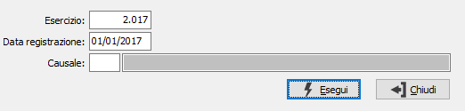

Annullamento rilevazione rimanenze
Il programma effettua l'annullamento dell’elaborazione delle rimanenze di magazzino. Il programma aggiorna i movimenti contabili, e storna le giacenze degli articoli e dei lotti se gestiti; inoltre aggiorna i riferimenti alla chiusura dell’ esercizio trattato e all’apertura dell’esercizio successivo, sui protocolli di magazzino. Contestualmente viene prodotto un report a stampa.

ESERCIZIO: campo numerico per indicare il numero dell’esercizio in cui è stata effettuata la rilevazione delle rimanenze di cui si desidera l’annullamento. Il campo deve contenere un valore valido.
DATA REGISTRAZIONE: campo data per contenere la data in cui è stata effettuata la rilevazione delle rimanenze di cui si desidera l’annullamento. Il campo deve contenere un valore valido e relativo all’esercizio indicato.
CAUSALE: codice della causale di magazzino con cui è stata effettuata la rilevazione delle rimanenze da annullare. Il campo non può essere vuoto. Sul campo sono attive le funzioni di ricerca (F9).